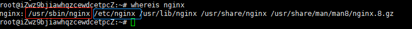
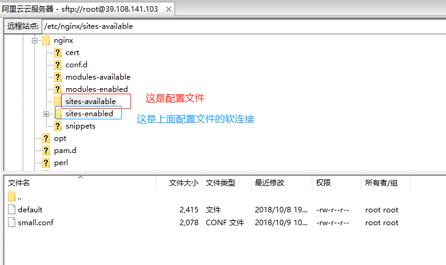
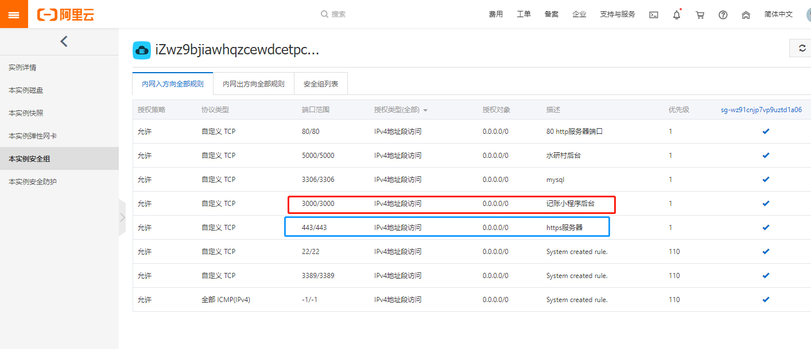

由于对linux的不熟，很多命令都记不住，2018年也是花了几天时间才把服务器环境搭起来，部署了nodejs的水研村官网前后端、部署了“账目随身记”小程序后端，并且利用nginx做了小程序需要的ssl证书转发https，现在已经忘了具体的操作了，免费ssl证书准备过期了，准备又得重新折腾了，下次一定得记录下来。
好了，在重启服务器之前得做点准备工作，得先找出nginx安装得目录，mysql安装得目录，到时候可以直接去到目录下直接执行例如./nginx这样来启动。我以为大多数linux安装目录都差不多，于是直接网上搜别人得，结果结果不是我想要的，后来我问了位前同事，用whereis nginx 来查找nginx的位置，然后出现了以下目录：

红色圈起来的才是我的nginx的安装目录，nginx就是可执行文件，另外，经过多次摸索和回忆，配置文件在蓝色圈起来的地方，
具体的位置是：
nginx -t为查找nginx配置文件所在的目录。
然后默认的default配置文件我没用，我自己写了个small.conf配置文件，里面配置了syc.iyuge.cn 水研村官网前台的转发地址，以及小程序需要的account后端的https的ssl配置
具体代码如下：
1 |
|
至于这个证书是怎么跟我的account关联起来的，这个我还真的忘了，我没记错的话，account和shuiyancun_back都有个nginx.conf文件,去看了下，account居然没有？只有shuiyancun_back才有。
想起来了，原来是需要在阿里云官网开放相应的端口后，外网才能访问的，而我是用pm2来启动项目的，也会有端口号，如图：

至于怎么制作ssl证书，等我两个月后证书过期了，再摸索一次记录下来吧
重启mginx的方法可以去到/usr/sbin/nginx目录，执行./nginx 启动。启动mysql的方式可以有两种：1.和nginx一样，但是要加用户名和密码，./mysql -u root -p 然后输入密码就打开数据库了；2.直接 mysql -u root -p 输入密码。
另外如果发现停止了PM2中某个项目的时候，还能运行，则说明这个程序已经以另外一种方式在运行了，我们需要查找正在运行的nodejs进程:ps aux | grep node
发现有进程后，直接kill 具体pid 就可以了
最后就是项目的启动了，进到项目目录执行 pm2 restart（或者start） pm2.json （因为有配置文件了） 就可以启动项目了
注意：不知道为什么pm2只能监控watch一个项目，如果是两个都watch，另一个项目无法跑起来，所以我的水研村后台就不watch了